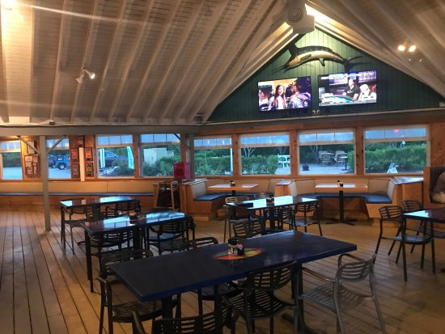

Hello there I am Claire, I am a food blogger, I love quality and great tasting foods. I travel all over the world and visit all its majors cities. Looking for the best foods out there, allowing my taste buds to enjoy every sensation.
Being a chef is my profession, hence, I am chef by profession. the journey started back when I realized that are so many foods to experiance out there. With this journey I started reviewing and recommending the best restaurants and food outlets out there. So with this you know where to get the best foods in your cities and other countries.
The feature
South Africa! Welcome to FoodieFanatix
Hey Foodie Fanatix! I went on an adventure to the beautiful country South frica and visted Durban. I took my taste buds out for a treat in the city. We visted a few places Restaurants and food outlets. The expierence was phenomenal and the food was divine. South Africa is a country with many hidden places and special foods. Wish I could go more places to eat, but only so much a girl can eat.
The Meals
dish1
A delicious sirloin steak with onions, peppers, and a buttery sauce.
dish2
The Salad, rice, crumbled bacon, shaved gruyere and chill is one of the best you can enjoy.
dish3
No doubt, best pizza every with florish taste.
dish4
Culinary prepared custard cooked mixture of milk or cream and egg yolk
dish5
The commander's Palace Salad and chilli spiced is one of the best you can enjoy.
dish6
This Pizza is in different options and you can choose the one which suits your taste.
dish7
our toast are amazing. One of the best i ever tasted.
dish8
Steak with quality Calamari. One of the best taste with fresh health quality
Steak and Veg
The best quality
Bugger
the best taste
Pasta!
Best Pasta Food enjoyed
Fruit Salad
The Best health Food.
Mesh
Quality tasted.
Rice and Veg
health food with best taste.
Steak
Delicious taste.
TheReviews
Check our reviews!
California Dreaming restaurant
California dreaming restaurant is fast becoming one of South Africa’s leading restaurant in Durban. With a 4.5 star rating we had to try out this place.
The consistent, family-friendly atmosphere can be enjoyed throughout all the locations, from a castle or waterfront fort to a historic train station, each restaurant is unique to their city.
Jukkes Pizza
We went to a restaurants with a 4 Star rating from 1005 reviews, by the name of California Dreaming which is an Canadan owned, This restaurant has the original Italian look and feel. They serve pizza and some amazing other meals and.
I had the Jukkes pizza, one of the best pizza i ever tasted. how can you go to an Italian like Restaurant and not have a pizza, I have had many Jukkes pizza before, but this pizza is just a cut above the rest, The base is thick and the crust is so crispy and so soft when you bite into it. The cheese just pulls off so smoothly when you bite into a slice and the flavour just explodes in your mouth. This is a must have when you want a pizza.
The Quesadilla
Then we also had the Quesadilla, This is the egg with beans and black grapes recipe.
This was divine the pure egg was soft like it was melting in you mouth, mixed with the beans the combination on flavour is tangy and spicy at the same time, talk about confusing your taste buds.
Roma Revolving Restaurant Durban
With its roots firmly set in passion and its flavours unapologetically Roma, Roma Revolving restaurant is fast becoming one of South Africa’s leading dining brands. With a 4 star rating we had to try out this place.
The Roma Revolving Restaurant also boasts the unique feature, as two others do, of a revolving window and floor area! The restaurant is situated on the 32nd Level of the John Ross House, overlooking the whole of Durban and surrounding areas with excellent sea and bay views.
Man! Oh Man! we were not dissapointed, lets just say we got there lunch time and left 2 hours before closing. This place caters for clients from all walks of the food chain, if you don't love your meats they do have treats for you.
Old Man Steak
The old man steak with Hot Spice with a side of onion rings and a salad.
This Foodies is a meal that requires hands, or sometimes a knife and a fork depending to a person. These steak are just on another level, the spice, flavours and the smell all of it just stimulates every part of ur taste buds. This meal I rate is my most favourite through out my adventures eating out in Durban.
This South African Foods is a must have, you need to eat it. trust me I am a chef.
The Roma Beef Salad
So due to my curiosity I wanted to know what an Roma Beef Salad tasted like. Let's be real you would too. So my Roma salad arrives and I mean it has beef in it, and they ain't small either. The beef is soft perfectly flamed. Foodies the BEEF is flame grilled, so the texture and aroma causes your mouth to water.
I tried my salad and thats the last time i lifted my head or spoke to anyone, till it was done. So after that I wanted more and guess what I ordered...Yes Foodies Flame Grilled
Surf rider restaurant
With its firmly set in passion and its flavours unapologetically ocaen food, Roma Revolving restaurant is fast becoming one of South Africa’s leading ocean food brands. With a 5 star rating we had to try out this place.
In fact, Surf Rider first opened in May 1980 when Liz Massey and her son, Stanley Bennett, had an idea about serving up real home-style cooking.
Man! Oh Man! we were not dissapointed, lets just say we got there lunch time and left 4 hours before closing. This place caters for clients from all walks of the food chain, if you don't love your ocean food they do have treats for you.

The Shrimp Prawns
If you are a lover of sea foods then you must get the Shrimp Prawn, These shrimp prawns a massive and the calarmai is dripped in the amazing sause, the taste will drive your taste buds insane.
The Calamari is prepared in such away then when it goes into ur mouth it melts slowly, giviing you taste buds this pleasure of savouring every moment as the Calamari melts.
Fish Veg
If you looking for a wild experiance you must have the catch of the day.
This fish is freshly caught from the river and is preapred on open flames and soaked in amazing sauses, garlic, spicy and tangy flavours, with a side of potjie-veggies...sounds so exciting you have to taste it.